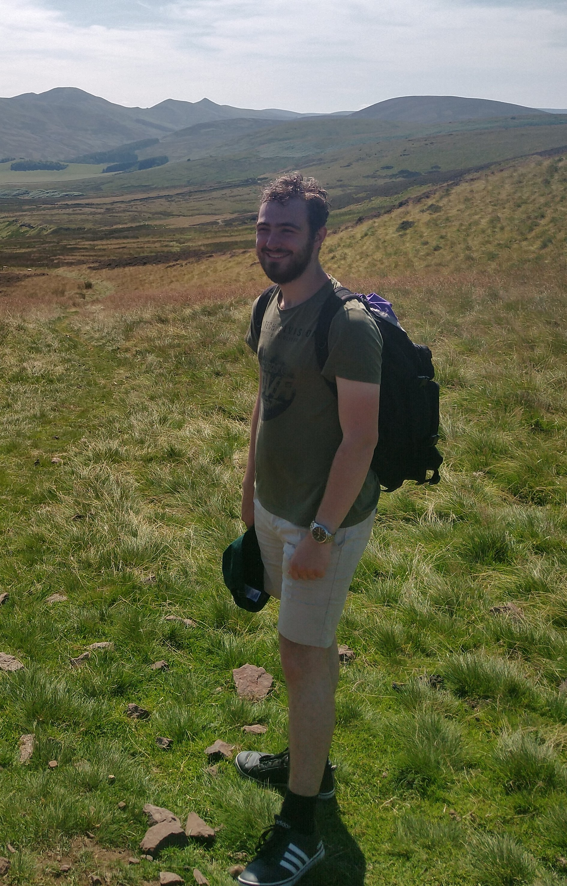

I am a PhD Mathematician interested in enriched category supervised by Simon Willerton at the University of Sheffield where I am a member of the Algebraic Topology research group.
Conferences and Talks
Talks
- The Unreasonable Effectiveness of Category Theory in Crumpled Paper, LMS Summer School undergraduate conference, Sheffield, 2023
- Introduction to Simplicial Sets, Infinity category reading group, Sheffield, 2023
- Total Non-Negativity, Amazing Matrices, and Matrix Factorisation, Sheaf seminar, Sheffield, 2022
Attended
Organised
- Infinity category reading group with Andrew Fisher - 2023